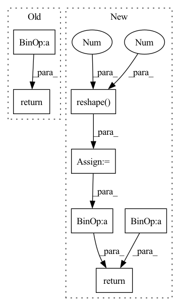

Pattern ID :447

Before Change
def forward(self, E: Tensor, J: Tensor):
x = E.square().sum(-1, keepdim=True)
G = jacobian(self.func, x)
return G * E, J
class FastTriggs(nn.Module):
After Change
"""
x = E.square().sum(-1, keepdim=True)
g = jacobian(self.func, x)
s = s.expand_as(E).reshape(-1, 1)
return g * E, s * J
class FastTriggs(nn.Module):
In pattern: SUPERPATTERN
Frequency: 3
Non-data size: 7
Instances
Fragment ID: 1672089
Project Name: pypose/pypose
Commit Name: 0a01e666b48aa48903cdadab810bb3de0e4252c1
Time: 2022-07-12
Author: jeffsan@gmx.com
File Name: pypose/optim/corrector.py
M Class Name: TrivialScale
N Class Name: GradScale
M Method Name: forward(3)
N Method Name: forward(3)
M Parent Class: nn.Module
N Parent Class: nn.Module
M File Name: pypose/optim/corrector.py
N File Name: pypose/optim/corrector.py
M Start Line: 17
M End Line: 18
N Start Line: 44
N End Line: 46
'>
Before Change
oC, iC, kH, kW = self.weight.size()
affined_style = self.style_fc(style)
weight = self.elr_scale * self.weight.view(1, oC, iC, kH, kW) * affined_style.view(B, 1, iC, 1, 1)
if self.demod:
norm = 1 / ((weight**2).sum([2, 3, 4]) + 1.e-8)**0.5
weight = weight * norm.view(B, oC, 1, 1, 1)
out = F.conv2d(
x.contiguous().view(1, B*iC, H, W), weight.view(B*oC, iC, kH, kW),
stride=self.stride, padding=self.padding, groups=B
)
_, _, H, W = out.size()
out = out.view(B, -1, H, W)
return out
class Bias(nn.Module):
def __init__(self, out_channels, bias_init=0, lr=1.):
After Change
weight = weight * d
// reshaping for conv input
x = x.reshape(1, -1, H, W)
_, _, *ws = weight.size()
weight = weight.reshape(B*self.out_channels, *ws)
pad = self._get_same_padding(H)
// conv
x = F.conv2d(x, weight, padding=pad, groups=B)
// return with bias
return x.reshape(B, self.out_channels, H, W) + self.bias
def _get_same_padding(self, size):
return ((size - 1) * (self.stride - 1) + (self.kernel_size - 1)) // 2
'>
Fragment ID: 1672088
Project Name: stomoya/animeface
Commit Name: b3652bae109c713da926d5532eb014b02135da52
Time: 2020-12-14
Author: blackie0110@gmail.com
File Name: implementations/StyleGAN2/model.py
M Class Name: EqualizedModulatedConv2d
N Class Name: ModulatedConv2d
M Method Name: forward(3)
N Method Name: forward(3)
M Parent Class: nn.Module
N Parent Class: nn.Module
M File Name: implementations/StyleGAN2/model.py
N File Name: implementations/StyleGAN2/model.py
M Start Line: 71
M End Line: 87
N Start Line: 109
N End Line: 131
'>
Before Change
def forward(self, E: Tensor, J: Tensor):
x = E.square().sum(-1, keepdim=True)
G = jacobian(self.func, x)
return G * E, J
class FastTriggs(nn.Module):
After Change
"""
x = E.square().sum(-1, keepdim=True)
g = jacobian(self.func, x)
s = s.expand_as(E).reshape(-1, 1)
return g * E, s * J
class FastTriggs(nn.Module):
'>
Fragment ID: 1672079
Project Name: pypose/pypose
Commit Name: e3cfe6c2a3cad823d35c9a48d6b711b7248e19b7
Time: 2022-07-10
Author: jeffsan@gmx.com
File Name: pypose/optim/corrector.py
M Class Name: TrivialScale
N Class Name: GradScale
M Method Name: forward(3)
N Method Name: forward(3)
M Parent Class: nn.Module
N Parent Class: nn.Module
M File Name: pypose/optim/corrector.py
N File Name: pypose/optim/corrector.py
M Start Line: 17
M End Line: 18
N Start Line: 44
N End Line: 46